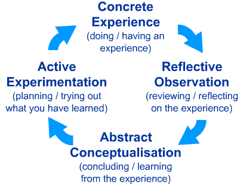
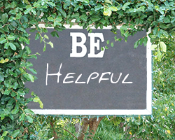
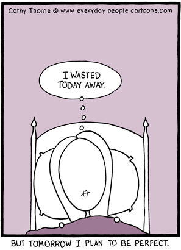

As software developers, we need to be rapidly taking in information and learning all the time. Therefore, it is essential that to become better we become better learners. Now, each person has his own unique learning style, and I feel it is important that they consciously discover what works for them. This post is not advice, but mostly self reflection, in an effort for me to optimize my own learning!
What do I mean by consciously learning? It means you need to make a conscious effort to learn. Our brain is hard-wired to resists change, and does what it knows how to do, even though it may not be efficient. As software developers, you should shun manual work. Write a script to do it, even if it takes longer! First you get to learn, and second - when you have to do it again ( yes you will need to sooner or later) you can just run your home-brew script :) You must be constantly looking for opportunities to learn, and questioning what you do. For example: I recently needed to add ssh keys to my github account. Now I could simply cat/open the public key file and copy-paste it's contents using my mouse. I quickly thought that what I am doing seems inefficient, and there must be better ways to do it. A little bit of googling revealed the command pbcopy! Bingo - I learned something new, by doing a seemingly routine task. Learn to recognize learning opportunities. Apart from questioning what you are doing, question how you are doing it? Could you be doing it more efficiently? I bet you can. Invest time to learn your tools. Now granted this is a trivial example, but if you make it a habit to learn like this, you'll realize that you get things done quicker than others! And you know what that means right - yes more time on the beach - and of course more time to learn new things, so you can be even more efficient at what you do! It's a positive time-saving cycle!

Yes. Repeat that. Don't ask for help. Google. Search. Read the documentation. Even though it might take longer, the process of searching and skimming through links teaches you 10 different things. Suddenly you know a lot more about what you were searching. If you had asked, you would have probably been handed the answer, and never learned all these other wonderful things. It is only after you have exhausted all you options, that you should ask for help. Obviously, the caveat here is that you are not on a tight deadline - because sometimes, when you just need to get things done, it's better to ask!
Related to the above is learning to rapidly read and take in information. Can you search efficiently? Maybe devote some time learning how to speed read. Become good at finding and recognizing useful information.
Answer other people's queries. Go out of your way to find solutions for them. Why? Because these are real world issues and problems which you didn't have to discover yourself. They are just adding their own experience to yours. Be thankful for that!

This is very critical. I often find myself spending time to understand/figuring out some command. Days later, I need to redo the command - but I can't reconstruct it immediately. I need to resort to googling again, and finding the appropriate resources. Therefore create an appropriate system for storing and quickly retrieving all the new things you are learning. That way you can easily get to the resources later. It's a lot easier to recall using your own notes/resources you studied, rather than figuring out the solution from new resources. Even though it might take a little bit of time to create these notes, it will become an invaluable resource for you down the line. I use the excellent org mode to track various tidbits of wisdom, but feel free to use any system to keep track of what you are learning.
Time management / progress tracking is absolutely critical in order to maximize your learning. At the end of the day, if you can do things faster than your co-workers, you save time - which you can then invest in learning how to do things even faster! Look at where your time is going? Could you be saving some of this time in order to improve your skill. Recognize inefficiencies in your daily routine and eliminate them. Save time, in order to create time to learn and improve! It's easy to fall into a daily routine where you are doing what you know/what's required of you. Constantly remind and question yourself - have I learned anything new today.

Recognize the different types of learning. There is a learning by reading ( hacker news, reddit, and various other blogs) and then there is the learning by doing. Remember to do both. A lot of the time it is easy to fall into the learn by reading trap, where you skim a lot of things only to promptly forget about it. While this kind of learning is important, it is equally important to do some planned reading/learning. While blogs etc. give you a much needed random learning, you also need to have a learning plan, where you are learning something new methodically.
A lot of the times when learning by doing, we tend to get stuck with quality. Don't worry about quality when you are learning/trying things out. Just do things, and do them a lot. I am guilty of this one, where I get stuck in a perfectionist trap - and that hinders my learning since I begin to feel that what I am doing is not good enough. That is specially true of writing and blogging. I spend a lot of time agonizing over little details of the post, which means I sink more time than I need to - and usually end up abandoning the post because it is not good. Recently - I've been practicing free writing and I think its a great technique to learn. Quantity over quality. You can always distill quality from quantity later!
And last but not least, do useless things. A lot of the time I question myself if whether what I am doing/learning is worth my time. This questioning leads to self-doubt and often I end up doing nothing but mindlessly surfing the web. Avoid the trap! The simplest solution is to pick something concrete to do, and then do it without expecting anything from it. Don't think of what you do as a start up or a hobby or an investment. Just do it, because you enjoy doing it! Think of it like watching TV. Once you convince yourself, it is leisure and not work - the pressure to get a return on your time is no longer there.